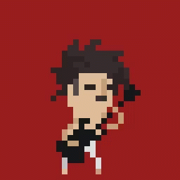
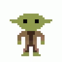
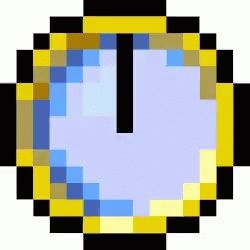
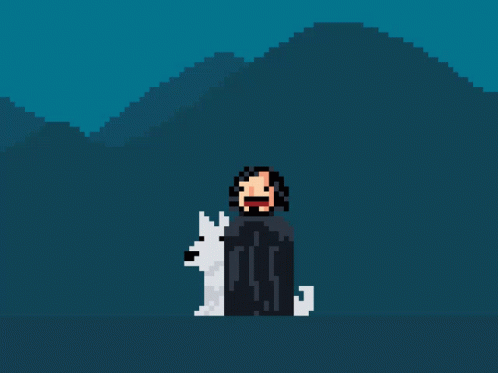
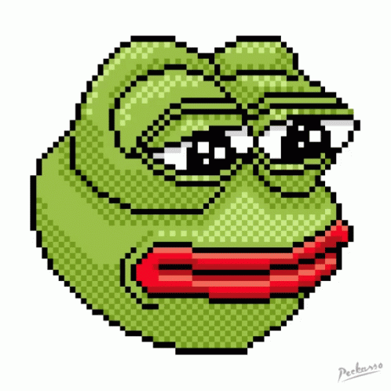
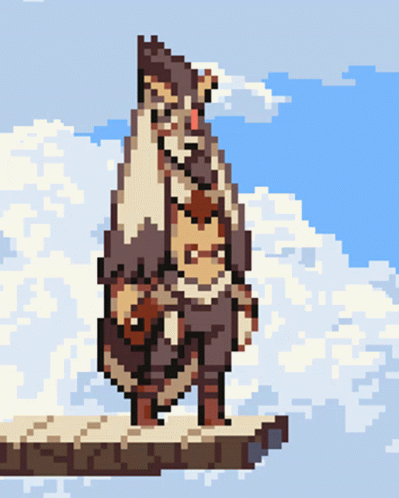
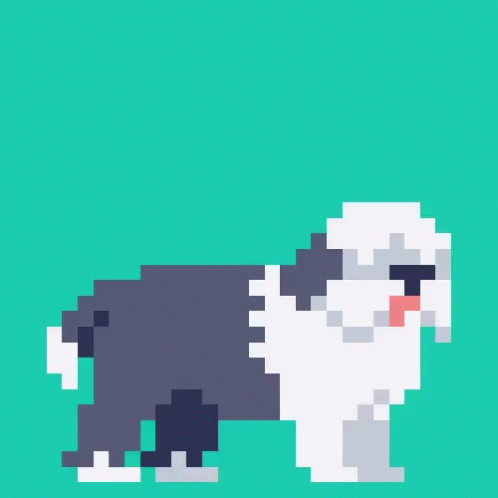
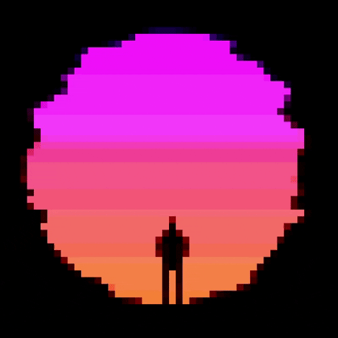

- Draw images with Pencil and edit with Eraser!
- Lost selected color? Use Eye Dropper tool!
- Fill area with Paint Bucket!
- Draw strait lines with Stroke and rectangles with Rectagle tool!
- Make your image Black&White!
- Set nesessary FPS to your animation!
- Change Size of your picture!
- Use Zoom if you want to zoom in!
- You can draw thin and bold lines!
- Download the result in GIF or APNG!
Here you can see examples of animations that can be created using the application.







